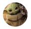

Home
-

Hudson Carolino
@hudsoncarolino 14s98% de #empregabilidade? Só na Kenzie... Pois é, 98% dos alunos formados estão trabalhando na área menos de 1 mês após a graduação #ninguemmesegura 🤯
-

Maria Porcina
@mariap.na 14sEste é um tweet. Pode ser longo ou curto. Depende do que você tem a dizer. Ele pode ter algumas hashtags também. #likethis
-
Daniel
@danielkenzie 14sMAIS DE 1 MILHÃO DE VAGAS! Artigo da McKinsey aponta que, até 2030, o Brasil terá um gargalo de 1 mi profissionais de tecnologia. É hora de se preparar... #VouSerDev #DoZeroAoCodigo